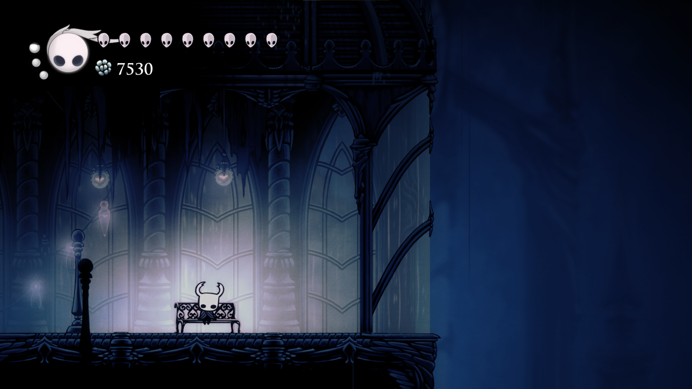
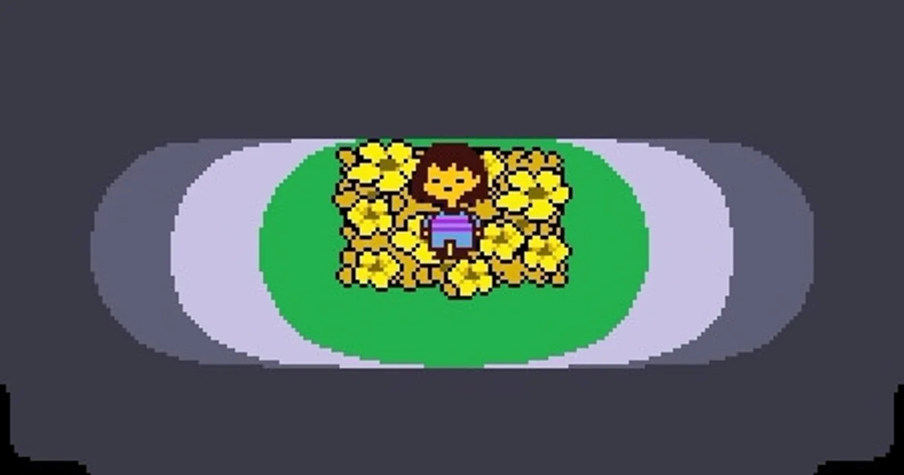
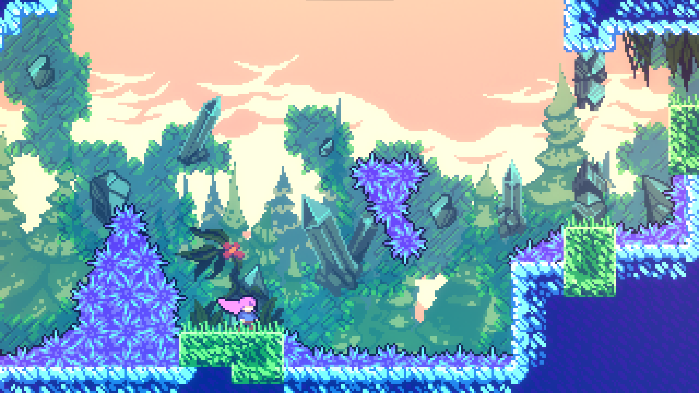
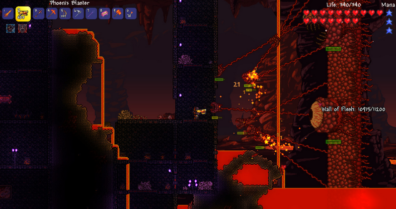

Hollow Knight
Hollow Knight to klimatyczna gra typu metroidvania osadzona w mrocznym, ręcznie rysowanym świecie Hallownest. Gracz eksploruje rozległe lokacje, walczy z wymagającymi przeciwnikami i odkrywa historię opowiadaną w subtelny, fragmentaryczny sposób. Produkcja wyróżnia się dopracowaną mechaniką walki, nastrojową oprawą audiowizualną oraz wysokim poziomem trudności.
Jeden z utworów, który gra kiedy walczysz z bossem.
Undertale
Undertale to nietypowa gra RPG, która stawia duży nacisk na fabułę i wybory moralne gracza. Każde spotkanie z przeciwnikiem można rozwiązać bez użycia przemocy, co ma realny wpływ na przebieg historii i jej zakończenie. Charakterystyczny styl graficzny, humor oraz zapadająca w pamięć ścieżka dźwiękowa sprawiły, że gra zyskała ogromną popularność.
Celeste
Celeste to wymagająca platformówka opowiadająca historię wspinaczki na tytułową górę, będącą metaforą osobistych zmagań bohaterki. Gra łączy precyzyjną, dynamiczną rozgrywkę z poruszającą narracją i minimalistyczną oprawą graficzną. Mimo wysokiego poziomu trudności, Celeste oferuje przystępne opcje ułatwień, zachęcając do wytrwałości i nauki.
Terraria
Terraria to dwuwymiarowa gra sandboxowa skupiona na eksploracji, budowaniu i walce w losowo generowanym świecie. Gracze mogą wydobywać surowce, tworzyć przedmioty, walczyć z potężnymi bossami i rozwijać swoją postać na wiele sposobów. Ogromna swoboda rozgrywki oraz regularne aktualizacje sprawiły, że gra cieszy się niesłabnącą popularnością.
Stardew Valley
Stardew Valley to relaksująca gra symulacyjna, w której gracz przejmuje zaniedbaną farmę i stopniowo ją rozwija. Oprócz uprawy roślin i hodowli zwierząt, można nawiązywać relacje z mieszkańcami miasteczka, eksplorować kopalnie oraz uczestniczyć w wydarzeniach sezonowych. Gra zachwyca spokojnym tempem, uroczą grafiką i dużą swobodą działań.

The Binding of Isaac
The Binding of Isaac to dynamiczna gra typu roguelike z elementami strzelanki, charakteryzująca się losowo generowanymi poziomami i wysokim poziomem trudności. Każda rozgrywka jest inna dzięki ogromnej liczbie przedmiotów i kombinacji zdolności. Mroczna symbolika połączona z unikalnym stylem graficznym nadaje grze wyjątkowy, rozpoznawalny charakter.

Vampire Survivors
Vampire Survivors to wciągająca gra roguelike z widokiem z góry, w której gracz walczy z niekończącymi się falami potworów, skupiając się na ruchu i wyborze ulepszeń, ponieważ ataki są wykonywane automatycznie. Krótkie, intensywne sesje oraz liczne synergie między broniami i bonusami sprawiają, że prosta, retro oprawa graficzna kryje zaskakująco głęboką i satysfakcjonującą rozgrywkę.

| nazwa | Hollow Knight | Undertale | Celeste | Terraria | Stardew Valley | The Binding of Isaac | Vampire Survivors |
| steam opinia | 96% pozytywne | 96% pozytywne | 96% pozytywne | 97% pozytywne | 98% pozytywne | 94% pozytywne | 98% pozytywne |
| cena | 68zł | 36zł | 92zł | 46zł | 54zł | 18zł | 20zł |
| rok wydania | 2017 | 2015 | 2018 | 2011 | 2016 | 2011 | 2022 |